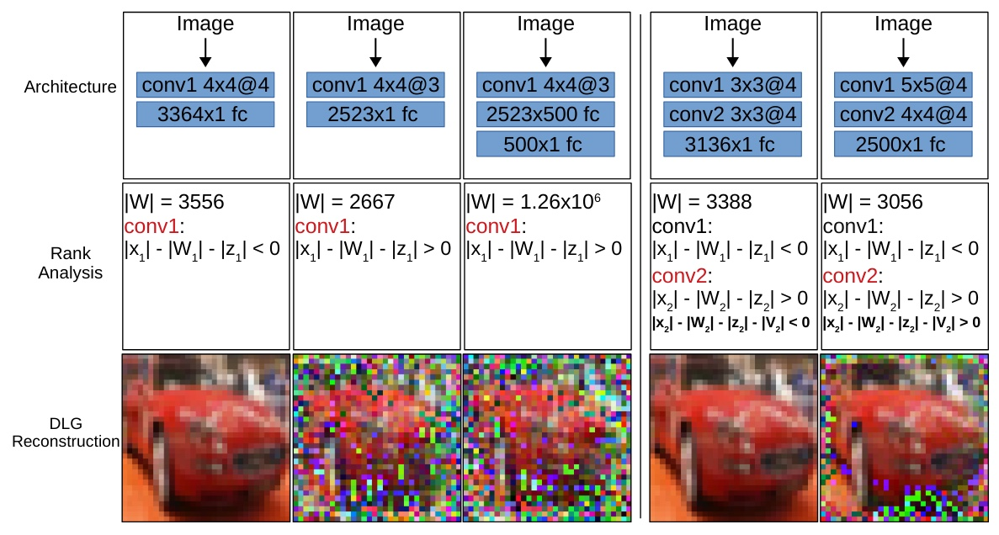

R-GAP: Recursive Gradient Attack on Privacy
ICLR 2021International Conference on Learning Representations

In brief
R-GAP established a third family of gradient privacy attacks: a closed-form, layer-by-layer recursion that reconstructs training data from gradients — the first such attack to work on both convolutional and fully connected networks, with or without bias terms. It runs orders of magnitude faster than optimization-based attacks with deterministic runtime, can fully recover data in cases where they fail, and its Rank Analysis predicts from the architecture alone whether recovery will be exact or provably noisy.
Key takeaways
- A closed-form recursive procedure recovers data from gradients layer by layer — no optimization loop, no local optima, deterministic runtime orders of magnitude faster than DLG-style attacks, and applicable where the older bias-term attack fails (no bias, convolutions).
- Answers the open theory question of optimization attacks: Rank Analysis gives conditions under which gradients admit unique recovery, predicting full versus provably noisy reconstruction from the architecture's rank deficiency.
- The analysis surfaces "twin data" — different inputs producing identical gradients — explaining why DLG is sensitive to initialization: its objective can have multiple global minima.
- Rank analysis is actionable for defense: small architectural modifications guided by it increase a network's resistance to gradient leakage without sacrificing accuracy.
- Under certain conditions the recursive attack fully recovers training data where optimization-based attacks fail.
Abstract
Federated learning frameworks have been regarded as a promising approach to break the dilemma between demands on privacy and the promise of learning from large collections of distributed data. Many such frameworks only ask collaborators to share their local update of a common model, i.e. gradients with respect to locally stored data, instead of exposing their raw data to other collaborators. However, recent optimization-based gradient attacks show that raw data can often be accurately recovered from gradients. It has been shown that minimizing the Euclidean distance between true gradients and those calculated from estimated data is often effective in fully recovering private data. However, there is a fundamental lack of theoretical understanding of how and when gradients can lead to unique recovery of original data. Our research fills this gap by providing a closed-form recursive procedure to recover data from gradients in deep neural networks. We name it Recursive Gradient Attack on Privacy (R-GAP). Experimental results demonstrate that R-GAP works as well as or even better than optimization-based approaches at a fraction of the computation under certain conditions. Additionally, we propose a Rank Analysis method, which can be used to estimate the risk of gradient attacks inherent in certain network architectures, regardless of whether an optimization-based or closed-form-recursive attack is used. Experimental results demonstrate the utility of the rank analysis towards improving the network's security.
BibTeX
@inproceedings{zhu_zhurgap,
title = {R-GAP: Recursive Gradient Attack on Privacy},
author = {Zhu, Junyi and Blaschko, Matthew B.},
year = {2021},
booktitle = {International Conference on Learning Representations},
url = {https://arxiv.org/abs/2010.07733},
}